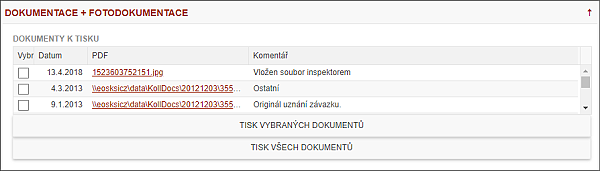

Podzáložka - DOKUMENTACE a FOTODOKUMENTACE

Seznam odeslané dokumentace generuje pouze centrála, podepsaná dokumentace (např. UZ) se na centrále objeví ve chvíli, kdy dokument přijde fyzicky na centrálu a bude naskenován a ověřen. V této podzáložce budou uloženy i pořízené fotografie. Ty bude IP moci vložit a proklikem na obrázku prohlížet. IP je nemůže vymazat ani editovat. Fotografie může odmazat supervizor.
Dále jsou v této záložce zobrazeny dokumenty, které byly odeslány dlužníkovi, přijaté dokumenty od dl., či dalších osob. A také dokumenty, které IP potřebuje pro výkon osobních návštěv – Podklad k OSN, UZ, SK.
Vkládání dokumentů a fotografií je uskutečňováno z procesu Zápis z OSN a Dohledané informace.